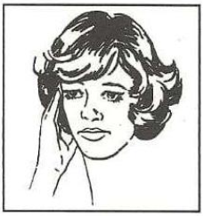
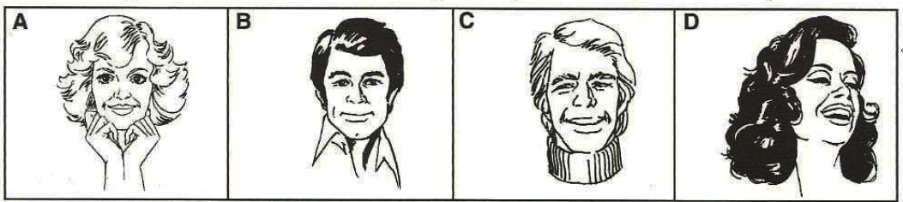
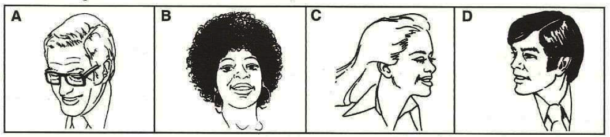
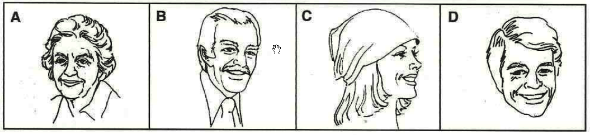
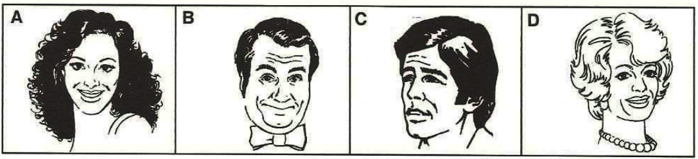
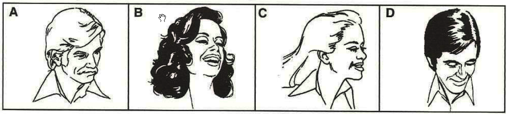
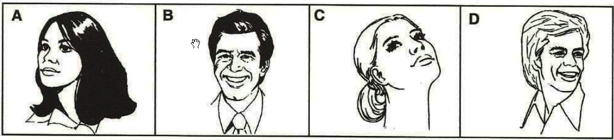

Memória Visual de Rostos (MVR)
Teste de Memorização e Evocação de Detalhes
Instruções
• Clique para marcar X (Trava a questão).
• Clique duplo para corrigir (Preenche e anula).
Certifique-se de que seu áudio está ligado.
Memorize os Rostos
Exemplos
E1. Escolha a pessoa vista na Ficha de Memorização.
E2. O nome da mulher que era médica era...
- Carmem
- Rosa
- Tânia
- Norma
E3. A assistente social era...
- de São Paulo
- Isabel
- Maria Angela
- Casada
Página 1
1. Escolha a pessoa vista na Ficha de Memorização.
2. Escolha a pessoa vista na Ficha de Memorização.
3. Escolha a pessoa vista na Ficha de Memorização.
4. O sobrenome da mulher chamada Rosa era...
- Pinho
- Lourenço
- Bueno
- Nóbrega
5. A pessoa que estava na cidade de Brasília:
- era um homem
- não era nutricionista
- estava na primeira linha
- tinha o sobrenome Nóbrega
6. Havia um homem de óculos...
- na coluna à esquerda
- na última linha
- na primeira linha
- no centro, à direita
7. O professor de sobrenome Guerreiro era de:
- Goiânia
- Curitiba
- Santo André
- Rio de Janeiro
8. Havia um homem de gravata que era ...
- de Campinas
- da primeira linha
- da primeira coluna
- de Campo Grande
9. A mulher penteada com rabo de cavalo...
- era professora
- estava em São Paulo
- era psicóloga
- era secretária
10. Na primeira coluna havia...
- dois homens
- três mulheres
- quatro homens
- duas mulheres
11. A pessoa chamada Jorge Batista era...
- médico
- professor
- padre
- eletricista
Página 2
12. Escolha a pessoa vista na Ficha de Memorização.
13. Escolha a pessoa vista na Ficha de Memorização.
14. Escolha a pessoa vista na Ficha de Memorização.
15. A mulher que era nutricionista também era...
- da primeira linha
- de Brasília
- da primeira coluna
- do Rio de Janeiro
16. A pessoa com sobrenome Moraes era...
- um médico
- um professor
- uma mulher
- uma assistente social
17. Era de Goiânia...
- Alberto Hering
- uma recepcionista
- uma nutricionista
- um professor
18. A pessoa chamada Inácio Barbosa...
- olhava de frente
- usava gravata
- tinha bigode
- usava óculos
19. Na ficha havia...
- duas secretárias
- duas professoras
- duas assistentes social
- dois professores
20. Entre os homens tinha um padre que era de ...
- Curitiba
- Porto Alegre
- Blumenau
- Campo Grande
RELATÓRIO DE DESEMPENHO
APTO
Parabéns! Excelente desempenho.
INAPTO!